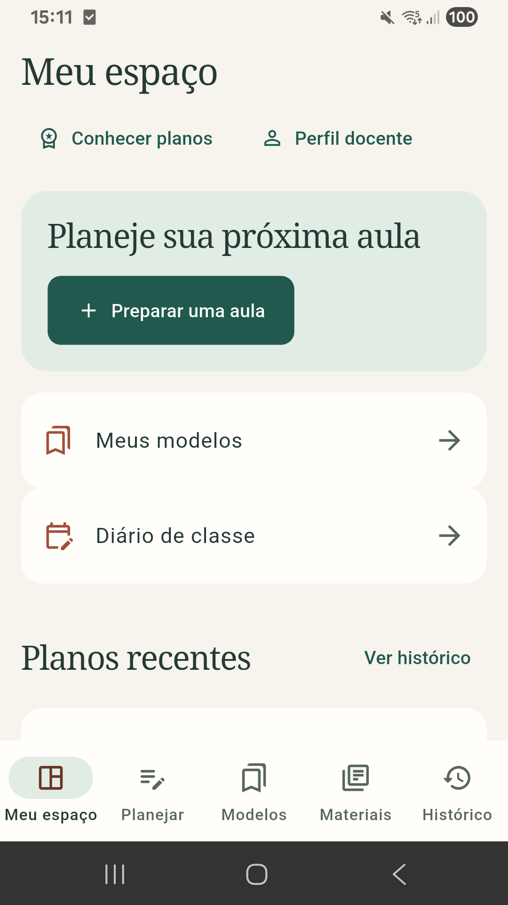

Planejamento guiado
Defina conteúdo, turma, duração e condução. Organize o tempo das atividades e reserve minutos para o acolhimento.
Do primeiro rascunho ao plano de aula: organize conteúdos, consulte a BNCC e reúna seus materiais em um só lugar.
Sem login. Explore com exemplos fictícios.
Versão 1.0.12 · Apresentação revisada em 16/10/2026
Matemática · 5º ano · 50 min
15 min reservados para acolhimento
Objetivos claros e um passo a passo para conduzir a aula.
Salve configurações e adapte seus melhores planejamentos.
Revise o roteiro e exporte o plano em PDF para usar na aula.
Defina conteúdo, turma, duração e condução. Organize o tempo das atividades e reserve minutos para o acolhimento.
Busque e vincule habilidades ao plano. A conferência de referências apoia sua revisão curricular e pedagógica.
Guarde uma configuração de aula e use novamente. Atualize o modelo original ou salve uma nova proposta.
Organize arquivos por ano, matéria e referência letiva. Vincule materiais aos seus planejamentos.
Reabra planejamentos, acompanhe revisões e aproveite uma aula anterior como ponto de partida.
Exporte seu plano e prepare rascunhos para o diário, com modelos de campos configuráveis no aplicativo.
Escolha o conteúdo, ajuste o tempo e veja um roteiro ganhar forma.
Carregando demonstração…
Uma demonstração para conhecer. A decisão pedagógica continua com você.
Capturas reais do aplicativo Android.

Acesse planos recentes, modelos e o diário de classe.
Experimentar este fluxoAs capturas mostram o aplicativo. A demonstração acima reproduz os principais fluxos com exemplos locais.
5 gerações com IA em até 15 dias.
Sem cartão.
30 gerações com IA por mês.
Para a sua rotina de planejamento.
100 gerações com IA por mês.
Para quem planeja com frequência.
O teste termina em 15 dias ou ao usar as 5 gerações, o que ocorrer primeiro. A IA está em piloto, sujeita a cotas e disponibilidade. Confira valores e condições no aplicativo e revise o conteúdo antes de usar.
| Plataforma | Disponibilidade |
|---|---|
| Web | Acesso pelo navegador, com cadastro no aplicativo. |
| Android | Aplicativo em piloto. Publicação no Google Play em preparação. |
| iOS | Publicação na App Store e validação em iPhone pendentes. |
No aplicativo, a biblioteca é vinculada à conta do professor. Evite incluir informações que identifiquem alunos nos planos e materiais.
As sugestões de IA e a conferência de referências BNCC apoiam a preparação. A adequação à turma e a revisão do plano continuam com você.
Esta página monta roteiros de exemplo no navegador, sem chamar serviços de IA nem consumir cotas. No aplicativo, a geração com IA é uma opção separada, sujeita ao plano e à disponibilidade do piloto.
A apresentação funciona em navegadores de computador, tablet e celular. O aplicativo web está disponível pelo botão de acesso. O Android está em piloto; a publicação nas lojas e a validação em iPhone permanecem pendentes.
Os exemplos e suas alterações ficam apenas na memória desta página. Reiniciar ou recarregar apaga o que você criou aqui. Apenas a preferência de tema pode ser guardada neste navegador. Use conteúdos fictícios.
Na demonstração, o botão de impressão permite salvar o roteiro como PDF pela janela do navegador. Os materiais são exemplos, sem envio de arquivos. No aplicativo, você pode anexar materiais e exportar o plano diretamente em PDF.